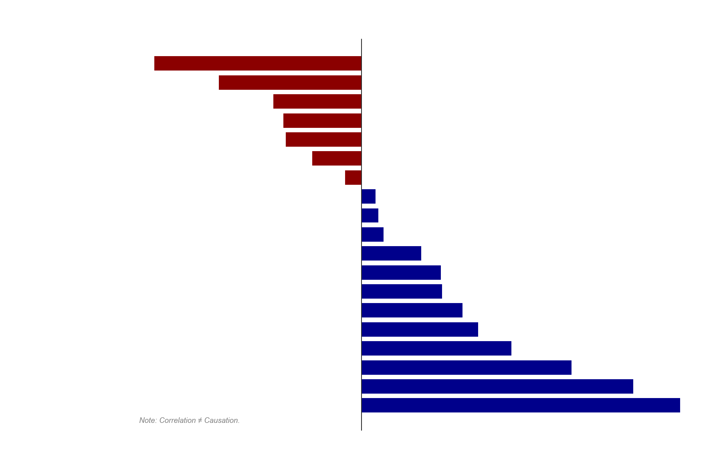
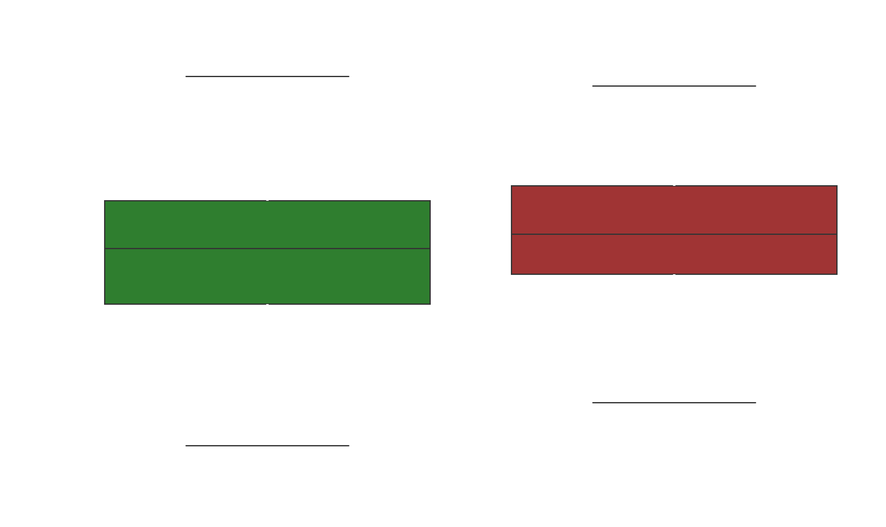

1
Data Science Internship: Week 1
Author: Kgaogelo Tshabalala
Supervisor: Nyasha Mutseta
2
Objectives
To evaluate the relationship between ball-in-hand continuity, kicking, and territorial gain
3


4
Conclusion
Territorial gain through kicking is a high-risk strategy that must be balanced by the superior efficiency of ball-in-hand continuity